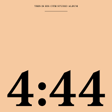

Top 50
 1
1
Summertime Sadness (2012) -
Lana Del Rey
Lana Del Rey
 2
2
United In Grief (2022) -
Kendrick Lamar
Kendrick Lamar
 3
3
As coisas tão mais lindas (2019) -
ANAVITÓRIA
ANAVITÓRIA
 4
4
Flashing Lights (2007) -
Kanye West
Kanye West
 5
5
A Ordem Natural das Coisas (2019) -
Emicida
Emicida
 6
6
Under The Influence (2019) -
Chris Brown
Chris Brown
 7
7
Runaway (2010) -
Kanye West
Kanye West
 8
8
Meet Me Halfay (2009) -
Black Eyed Peas
Black Eyed Peas

8
4:44 (2009) -
Jay-Z
Jay-Z